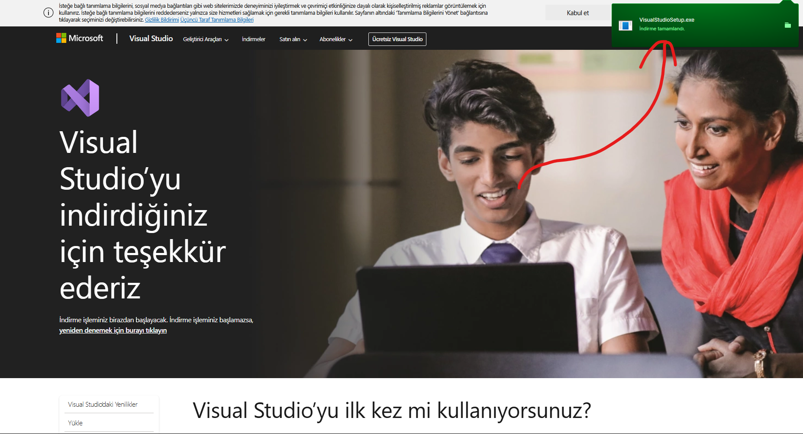
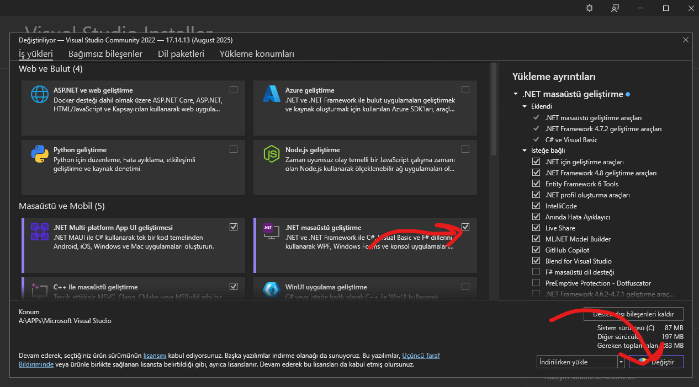
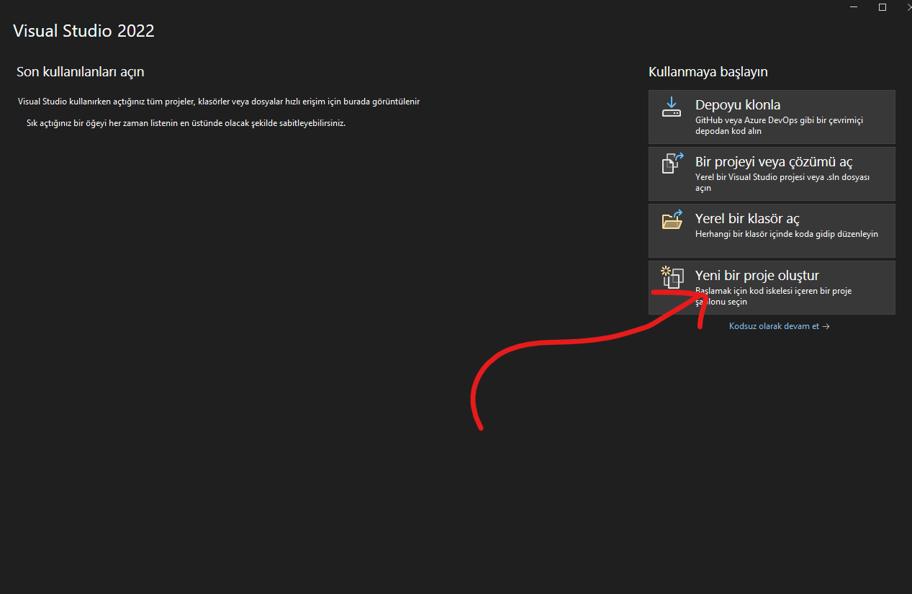
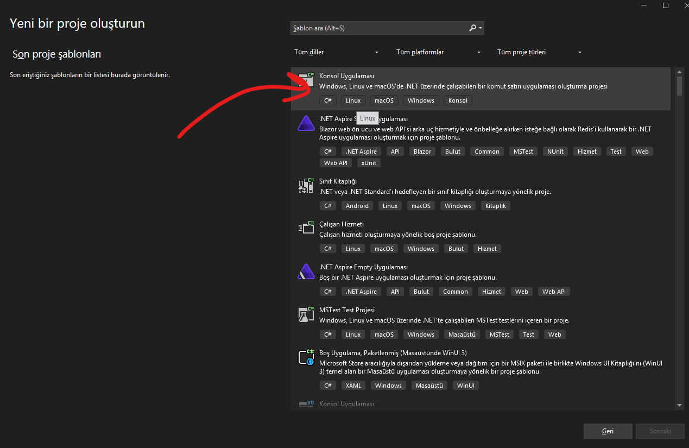

IDE Kurulumu
Visual Studio Kurulumu
Visual Studio Kurucu İndirme
Visual Studio’nun resmi sitesine gidip “Visual Studio indirin” butonuna tıklayarak kurucuyu indiriyoruz.
Visual Studio Kurma
İndirdiğimiz kurucuyu açıyoruz, “Community” sürümünü seçip “Yükle” butonuna tıklıyoruz. Ardından yükleme işlemi başlıyor. İndirmesi biraz zaman alabilir. Yükleme işlemi bittikten sonra bilgisayarınızı yeniden başlatmanız istenebilir. Bilgisayarınızı yeniden başlatın ve ardından Visual Studio’yu açın.

C# İçin SDK’leri Kurma
Visual Studio kurulumundan sonra gelen ekranda:

SDK’leri seçip indirdikten sonra artık ilk projemizi oluşturabiliriz.
İlk Proje Oluşturma
Visual Studio’yu açalım. Adımları izleyerek ilk projemizi oluşturalım.


“Sonraki” butonuna tıklayarak, proje adımızı giriyoruz ve ardından yine “Sonraki” butonuna basarak projemizi oluşturmuş oluruz.
Kaynakça